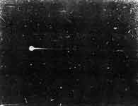

A Teaticket (Massachusetts), Marvin Odom, ancien pilote de chasse de l'US Navy,
le lieutenant Philip Foushee, pilote la base USAF de Otis, et 2 autres personnes
observent 2 cylindres fins et illuminés. De l'un des 2 sort une boule lumineuse. Les 2 manœuvres puis disparaissent
rapidement en hauteur au bout de Cas Blue
Book non expliqué.
Premier essai du missile sol-sol français SE 4200.
A Albuquerque (Nouveau Mexique)Luther McDonald et Harrison Manson, tous 2 observateurs
météo de l'Aéroport municipal, observent un objet blanc et ovale légèrement allongé voler horizontalement durant
environ à l'aide d'un théodolite Cas Blue Book non expliqué.

Observation de boule lumineuse verte le 24 près de Datil
Près de Datil (Nouveau Mexique), observation de boule lumineuse verte (ci-contre)
depuis un poste d'observation de l'USAF.
A Los Alamos (Nouveau Mexique), 12 inspecteurs
de la sécurité de l'AEC observent un cylindre argenté et clignotant, aux extrémités
effilées, voler lentement puis rapidement, palpiter et osciller, et changer de direction. La durée des observations
des témoins varie entre 3 s et 2 mn Cas Blue Book non expliqué.
A l'apparition d'une tache solaire géante, les amateurs londoniens de télévision voient durant 1 h sur leur écran
des images "russes" au son d'une musique suédoise.